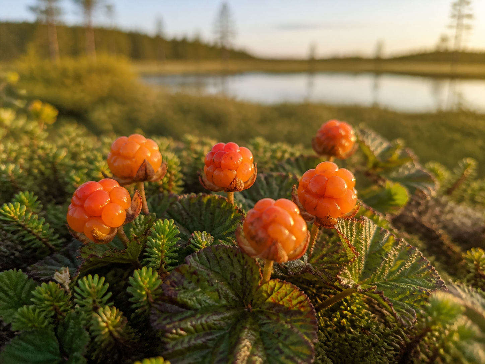

Blåbär
Söta och smakrika blåbär fyllda med antioxidanter och vitaminer.
- Användningsområden
- Mat, drycker och desserter.
Säsong: Juli – September
Fråga om produkten →
Upptäck vårt sortiment av finska bär för livsmedel, drycker och professionella kök.
Söta och smakrika blåbär fyllda med antioxidanter och vitaminer.

Syrliga och friska lingon. Perfekta för både mat och dryck.

Exklusiva och sällsynta hjortron med unik smak.

Aromatiska och rika på C-vitamin. Perfekta för juicer och desserter.
Finska vilda blåbär (Vaccinium myrtillus) är naturligt växande skogsbär som är uppskattade för sin goda smak, sitt mörkblå fruktkött och sitt rika innehåll av naturliga näringsämnen.
Blåbär innehåller flera viktiga vitaminer, mineraler, kostfiber och antioxidanter. De är särskilt kända för sitt höga innehåll av antocyaniner, som är naturliga växtämnen som ger bären deras mörkblå färg.
| Näringsämne | Mängd |
|---|---|
| Energi | ca 57 kcal |
| Vitamin C | 9,7 mg |
| Vitamin K | 19,3 µg |
| Vitamin E | 0,6 mg |
| Vitamin B1 | 0,04 mg |
| Vitamin B2 | 0,04 mg |
| Vitamin B3 | 0,42 mg |
| Vitamin B6 | 0,05 mg |
| Folat (B9) | 6 µg |
| Kalium | 77 mg |
| Magnesium | 6 mg |
| Kalcium | 6 mg |
| Kostfiber | 2,4 g |
Finska vilda blåbär växer naturligt i de finska skogarna. Bären skördas från naturen och kan användas som råvara inom livsmedelsindustrin för bland annat juice, sylt, smoothies, frysta bär och andra livsmedelsprodukter.
Finska vilda lingon (Vaccinium vitis-idaea) är naturligt växande skogsbär som är uppskattade för sin friska, syrliga smak, vackra röda färg och sitt naturliga innehåll av vitaminer, mineraler och antioxidanter.
Lingon växer vilt i de finska skogarna och skördas under sensommaren och hösten. Tack vare sitt naturliga näringsinnehåll och sin karakteristiska smak är lingon en uppskattad råvara inom livsmedelsindustrin.
| Näringsämne | Ungefärlig mängd |
|---|---|
| Energi | 50 kcal |
| Kolhydrater | 8–11 g |
| Sockerarter | 8–9 g |
| Kostfiber | 2–3 g |
| Vitamin C | 10 mg |
| Vitamin E | 1 mg |
| Vitamin K | 11 µg |
| Vitamin B1 | 0,02 mg |
| Kalium | 90 mg |
| Kalcium | 25 mg |
| Magnesium | 10 mg |
| Järn | 0,3 mg |
Finska lingon passar utmärkt som råvara för:
Vi arbetar med inköp och partihandel av finska vilda bär. Vårt mål är att erbjuda kunder naturliga bär av god kvalitet från de finska skogarna.
Finska vilda hjortron (Rubus chamaemorus) är exklusiva nordiska skogsbär som växer naturligt på myrar och våtmarker i Finland. Hjortron är uppskattade för sin unika arom, sin mjuka konsistens, sin vackra gyllengula färg och sitt naturliga innehåll av vitaminer och antioxidanter.
Hjortron kallas ofta för Nordens guld och är särskilt eftertraktade inom livsmedelsindustrin och på marknaden för exklusiva bärprodukter.
| Näringsämne | Ungefärlig mängd |
|---|---|
| Energi | 50 kcal |
| Kolhydrater | 8–9 g |
| Sockerarter | 3–5 g |
| Kostfiber | 6–7 g |
| Vitamin C | 60 mg |
| Vitamin E | 1,5 mg |
| Vitamin A | 3 µg |
| Kalium | 150 mg |
| Kalcium | 15 mg |
| Magnesium | 30 mg |
| Järn | 0,7 mg |
Finska hjortron är en uppskattad råvara för:
Wild Finnish Berries Oy arbetar med inköp och partihandel av finska vilda bär.
Vi värdesätter kvalitet, naturligt ursprung och långsiktiga samarbeten med våra leverantörer och kunder.
Vårt mål är att erbjuda naturliga finska bär som uppskattas både på den inhemska och internationella marknaden.
Svarta vinbär (Ribes nigrum) är uppskattade bär med intensiv smak, mörk färg och ett naturligt högt innehåll av vitaminer, mineraler och antioxidanter.
Svarta vinbär är särskilt kända för sitt höga innehåll av vitamin C. De används både som färska bär och som råvara inom livsmedelsindustrin för tillverkning av juice, sylt, saft, puréer och andra bärprodukter.
| Näringsämne | Ungefärlig mängd |
|---|---|
| Energi | 63 kcal |
| Kolhydrater | 15,4 g |
| Sockerarter | 6,8 g |
| Kostfiber | 4,3 g |
| Vitamin C | 181 mg |
| Vitamin A | 12 µg |
| Vitamin E | 1 mg |
| Vitamin K | 2,8 µg |
| Vitamin B1 | 0,05 mg |
| Vitamin B2 | 0,05 mg |
| Vitamin B6 | 0,07 mg |
| Kalium | 322 mg |
| Kalcium | 55 mg |
| Magnesium | 24 mg |
| Järn | 1,5 mg |
Svarta vinbär passar utmärkt som råvara för:
Wild Finnish Berries Oy arbetar med inköp och partihandel av finska bär.
Vi värdesätter naturligt ursprung, hög kvalitet och långsiktiga samarbeten med leverantörer och kunder.
Vårt mål är att erbjuda högkvalitativa bär från Finland till både den inhemska och internationella marknaden.
Kontakta oss för aktuell tillgång, mängder, förpackning och leverans. Säsongerna ovan anger plockningstider; tillgången bekräftas vid förfrågan.
Kontakta oss →